I like spiders a lot.
The name "Spider" derives from the Proto-Indo-European root spen, 'to draw, stretch, spin.' Over 50 thousand spieces have been identified, on every continent except Antarctica.
When it comes to spiders, some people have very instant reactions. Some run away in terror. Others will kill them. And some people like me, find them some of the most fascinating creatures and will learn all they can about them. Firstly, they aren't all as scary looking as you might think. Let's have a look at some pretty spiders from around the world.
"The spider is a repairer. If you bash into the web of a spider, she doesn't get mad. She weaves and repairs it." — Louise Bourgeois
South America
The largest spider in the world resides in South America - the Goliath birdeater (Theraphosa blondi), as well as two of the most venomous spiders - the Brazillian Wandering Spiders and the Recluse spiders. Let's venture to the amazon rainforest to meet our first beauty.
-
Typhochlaena seladonia, or the Brazilian Jewel Tarantula.
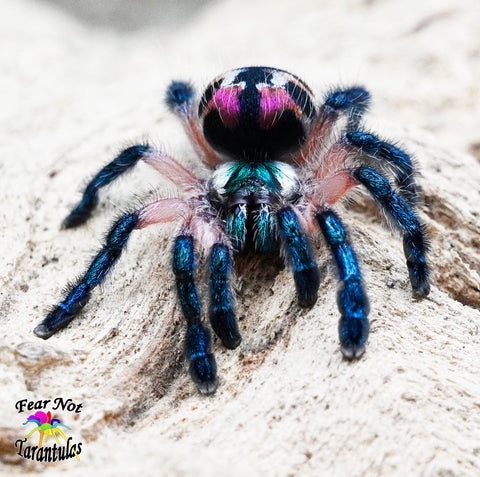
Image credit to Fear Not Tarantulas They are trapdoor spiders and are found in the rainforests of Brazil. Only reaching an avage size of around 6cm, the small spiders are rarely seen, making little homes in bark and emerging quickly from their trapdoor to eat.
What is a trapdoor spider?
Trapdoor spiders hide behind a hinged door and wait for prey to pass, quickly emerging from their hole and grabbing their prey.
-
Menemerus semilimbatus, or Half-edged Wall Jumping Spider.
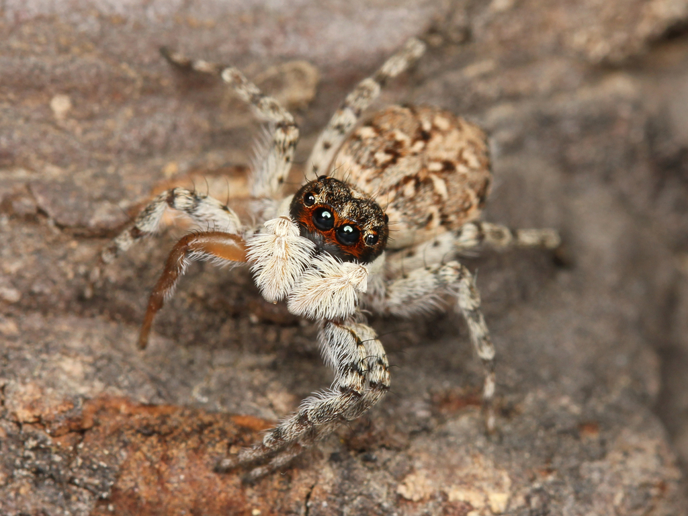
Image credit to Inaturalist This species can be found in a few places around the world. Everyone loves a cute little jumping spider, and this is one of them! This species growing to about 6-8mm, this tiny little thing roams gardens and walls to find food. They don't spin webs, instead relying on their jumping to attack their prey.
North America
So many gorgeous spiders can be found in North America.
-
Lyssomanes viridis, or the Magnolia Green Jumping Spider .
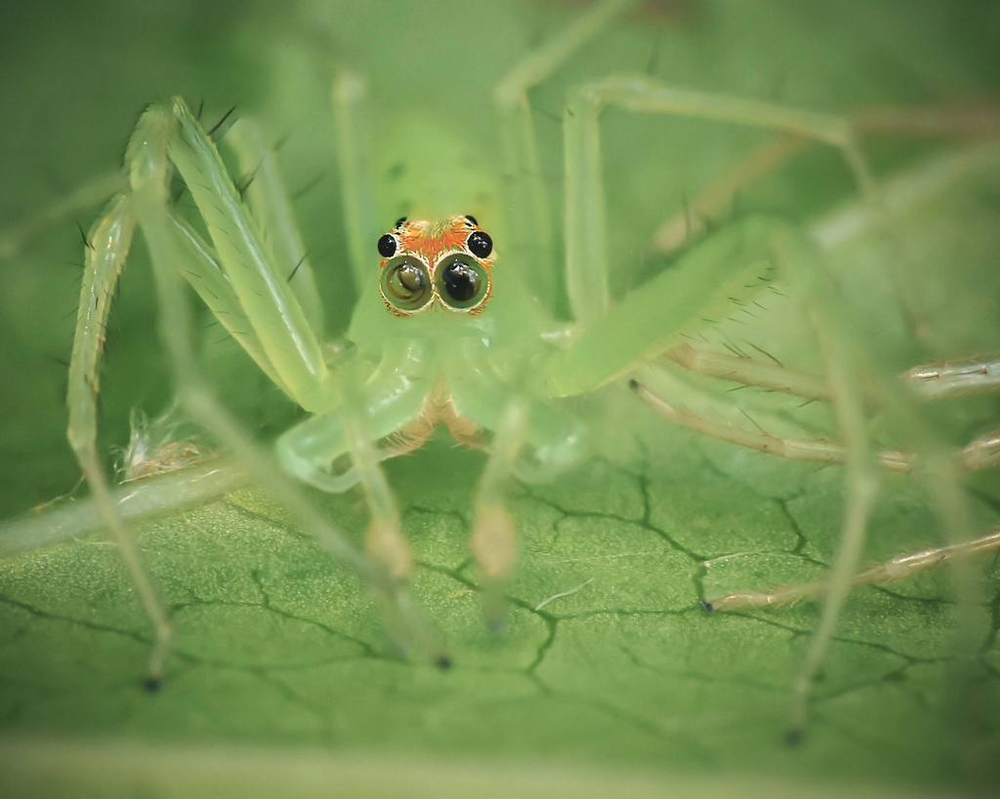
Image credit to Inaturalist They are a small, translucent green jumping spider native to the southeastern United States. It is harmless to humans and can camouflage itself perfectly on leaves. They measure up to 8 mm, and love to reside in Magnolia Trees, amongst other shrubs.
-
Gasteracantha cancriformis, or Spinybacked Orbweaver.
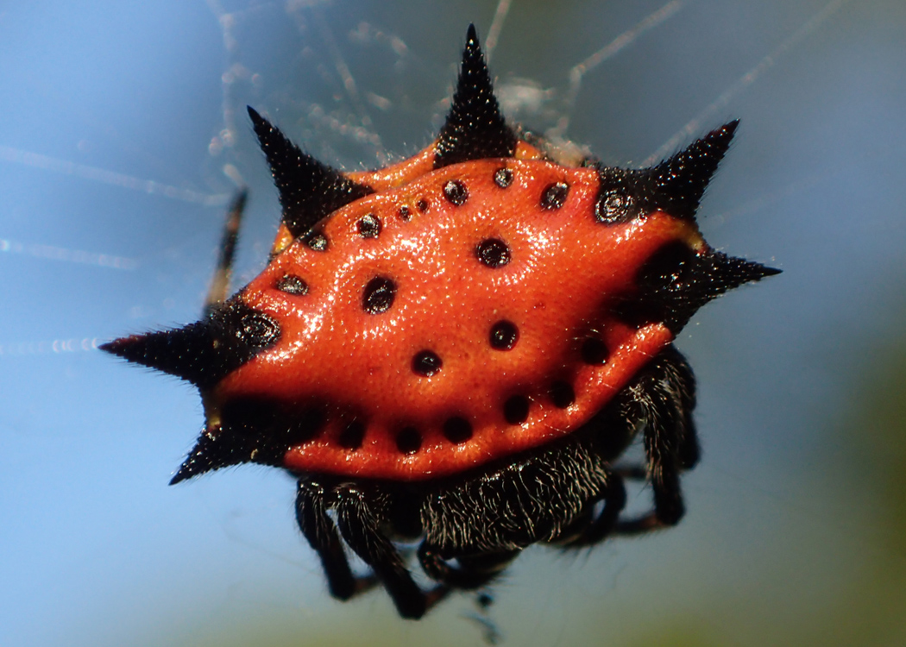
Image credit to Riveredge Nature Centre These gorgous orbweavers are found in gardens ,woods, forests, and citrus groves across tropical and subtropical regions. Most live about a year or less, dying after reproduction.
What is an orbweaver?
They get their name from the spiral, wheel-shaped webs they weave, often seen in gardens and forests. The web is woven normally, but they will then add a layer of sticky droplets to capture their prey. Orb weavers are generally docile and reluctant to bite.
"What is not to love about spiders? They are amazing little creatures that can build mesmerizing webs, perform elaborate dances, and even fly long distances using their silk as a sail. And they can do all these and more being just few centimeters long, well at least most of them." - Dimitar Dimitrov Arachnologist at the University Museum of Bergen
Asia
Asia is home to over 17,000 spider species!
-
Melopoeus lividus, or the Cobalt Blue Tarantula.
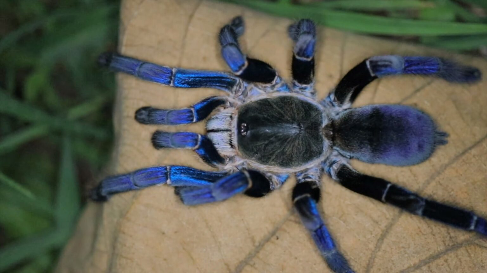
Image credit to birdspidersCH This is a burrowing tarantula from Myanmar and Thailand. It uses a silk-lined burrow entrance to sense nearby prey and dart out quickly to strike.
Why do some spiders burrow?
These spiders use a burrow as they are ambush predators that use their concealed base for ambush hunting.
-
Platythomisus octomaculatus, or Eight-Spotted Crab Spider.
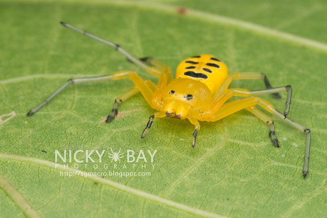
Image credit to Nicky Bay They are tree-dwellers found in South-East Asia. Nicknamed the "Pikachu spider" because of its bold yellow-and-black coloration. Males grow to about 4mm, and females, 20mm. They are ambush predators and don't spin a web, instead waiting on foliage and flowers to grab their prey.
Europe
Home of the European Black Widow (Latrodectus tredecimguttatus) and the Mediterranean recluse (Loxosceles rufescens), two of the spiders you would want to look at from afar, they have many other gorgeous species to observe.
-
Thomisus onustus, or the Heather Crab Spider.
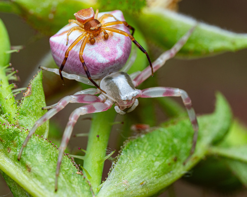
Image credit to Inaturalist This is a flower-dwelling ambush spider native to Europe, North Africa, the Middle East, and Asia, and are known for their camouflaging ability. Females shift between white, yellow, and pink to blend in with flowers to evade predators and capture their prey.
Other camouflaging spiders
The Australian Wraparound spider (Dolophones conifera), flattens itself to look like a bumb in wood. There are also Ant-mimicking spiders, imitate ant movements and alter their front legs to look like antennae. Many other orbweavers as well as the Lichen Huntsman have the ability to blend into their surroundings.
-
Eresus walckenaeri , or Mediterranean Velvet Spider.
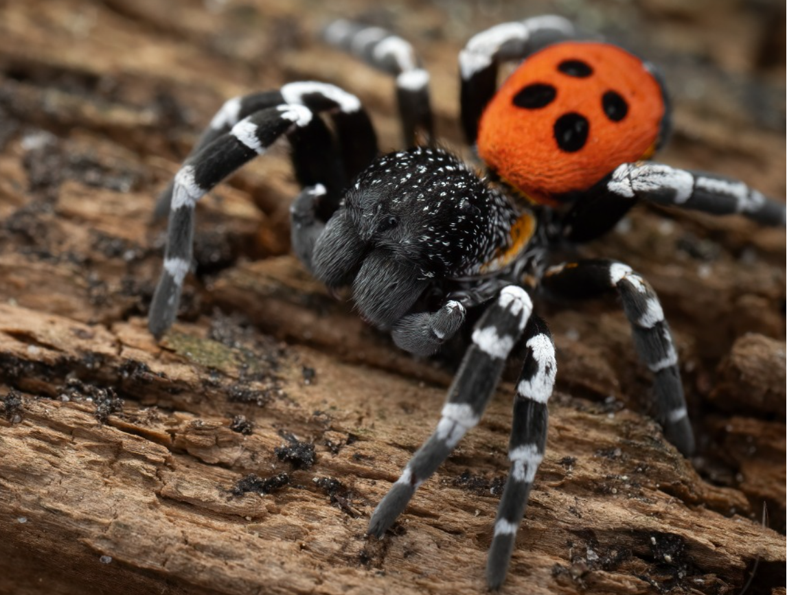
Image credit to Herlinde Noppe Also known as the "Ladybug" spider, dense plush hairs cover their bodies and short sturdy legs give them a soft velvety texture. They live in warm, dry, rocky scrublands or under stones and debris, and instead of spinning classic orb webs they build silk lined retreats or tunnels camouflaged with soil and debris.
Australia
There are approximately 2,900 spieces of spiders found in Austalia. Since anti-venoms were introduced in 1981, there have been no human fatalities from the Sydney Funnel Web Spider, or the Redback Spider.
-
Maratus volans, or the Peacock Jumping Spider.
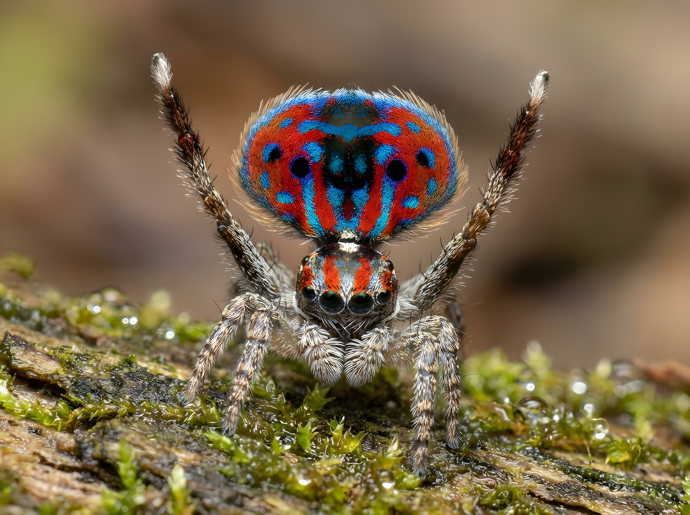
Image provided by Pixabay Reaching up to 5 mm in body length, these gorgeous jumping spiders can leap over 40 times their body length in a single jump often laying down a silk dragline as a safety line. Males sport brightly coloured abdominal flaps and elongated third legs while females are mottled brown or grey for camouflage.
-
Bijoaraneus praesignis, or Alien Butt Spider.
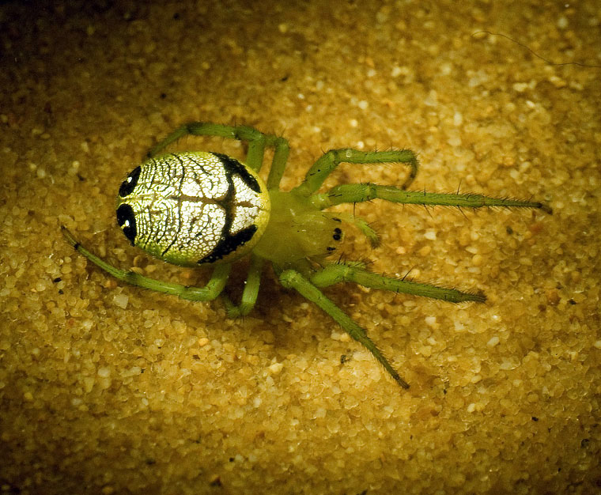
Image credit to Robert Whyte This beautiful orbweaver is native to Queensland, sports bold, black blobs on its rear, resembling eyes. This has been thought to be a warning to predators. In 2014, it was given the common name "Alien Butt Spider."

Africa
Africa is home to over 2,000 species of spider! Let's have a look at two.
-
Smodicinus sp. nov, or the Crowned Crab Spider.
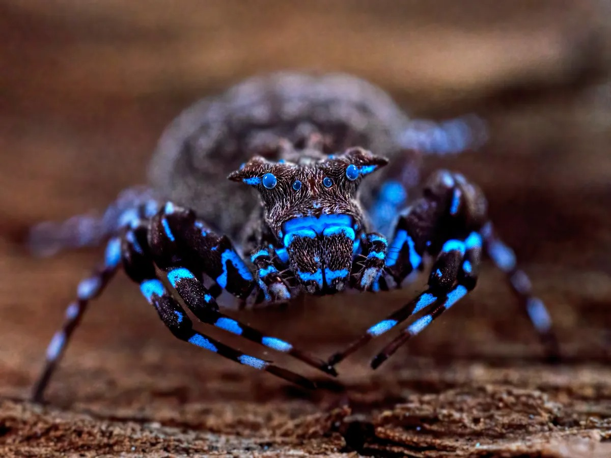
Image credit to Nicky Bay In February of 2026, a new undiscovered species of Crab Spider was found in Angola’s remote Lisima plateau, the Crowned Crab spider glows bright blue under UV light!
New Spider Discoveries in 2026
In Australia, scientists identified The Ballista spider (Propostira), in the Indian Himalaya's the Happy Face spider (Theridion himalayana sp.), The University of Idaho discovered the Hexura vandal - a species of funnel web, on an island off the coast of Mauritius, the Mauritian tidal trapdoor spider (Idioctis marevallum), and in the Columbia Gorge the Trogloraptor tulishpun. Scientists believe that there may be another 50,000 species still undiscovered.
-
Argiope australis, or Garden Orb Spider.
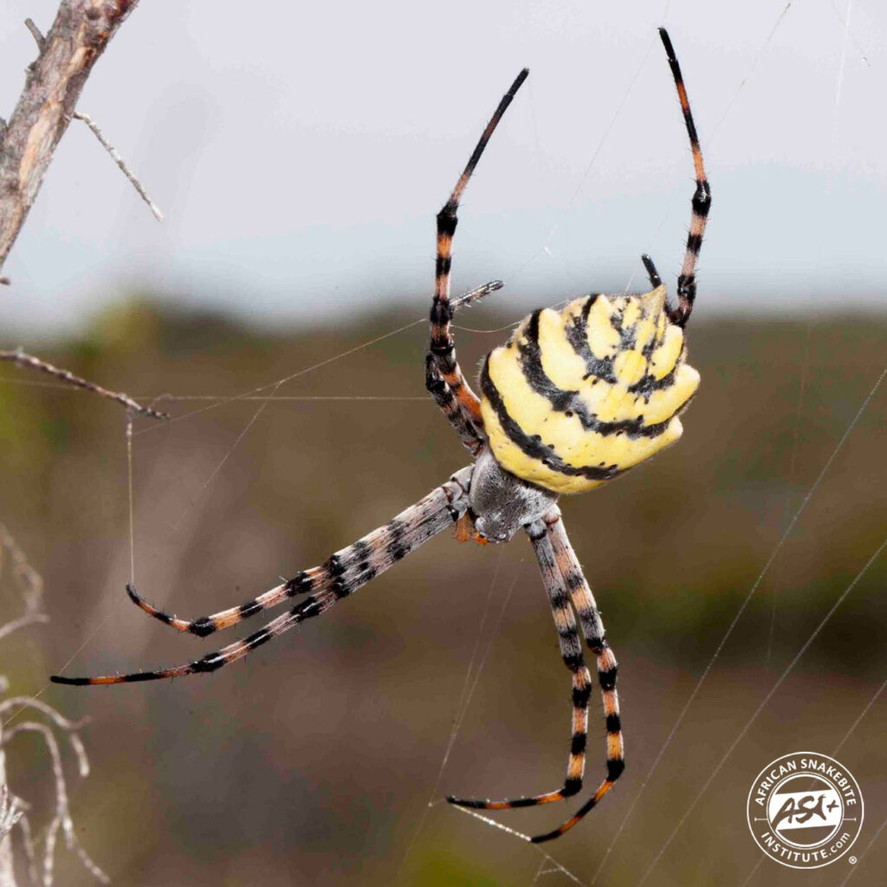
Image credit to African Snake Bite Institute Common all througout Africa, these orb weavers, like most of their kind, prefer grassland and shrubbery to construct their beautiful webs. The circular web frequently features zig-zag silk bands called stabilimenta radiating from the centre.
I hope after looking at those beautiful spiders, you're less scared of them, or have learnt something interesting about them! And please remember, they're living beings. Please dont kill them!
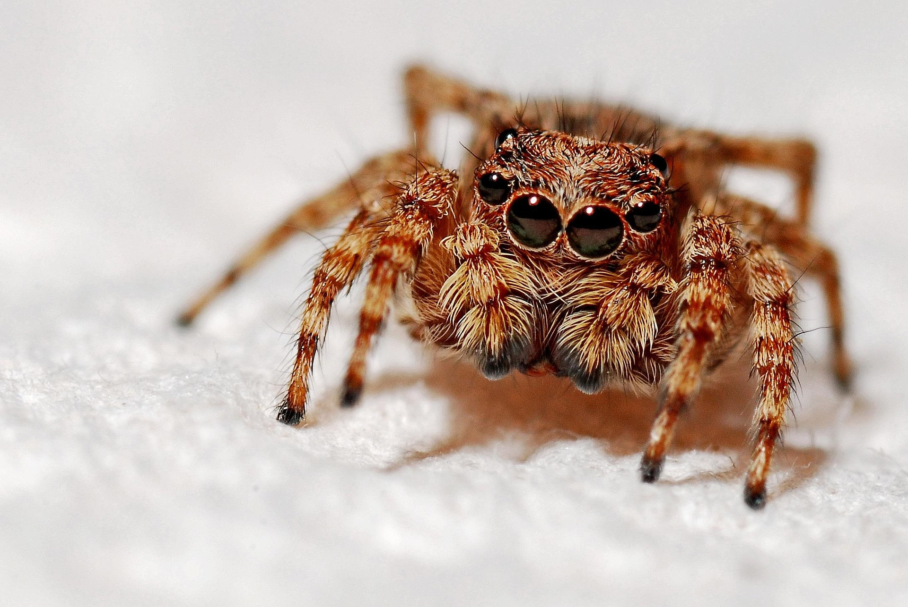